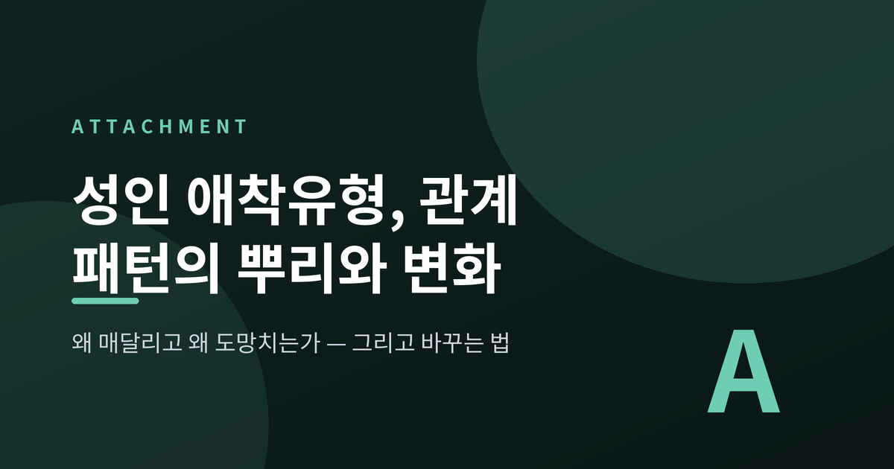
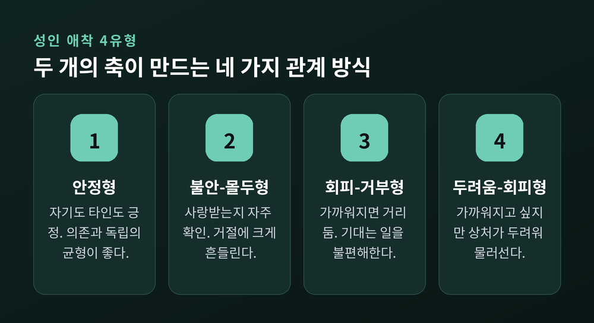
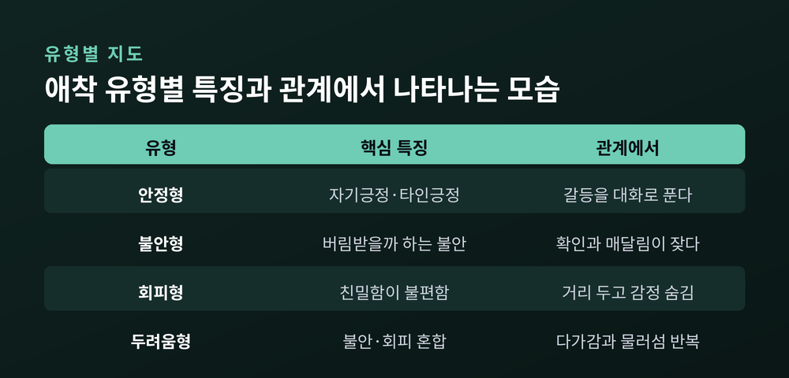
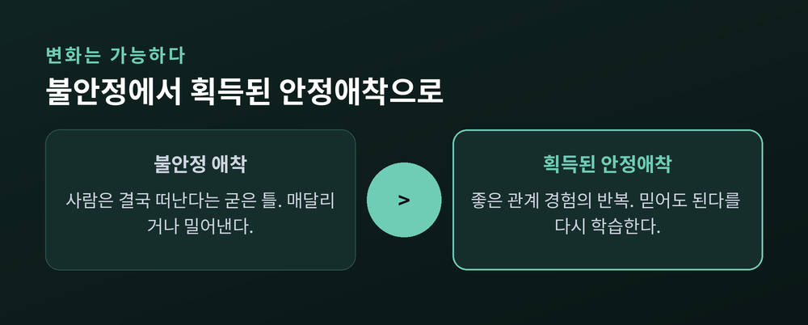
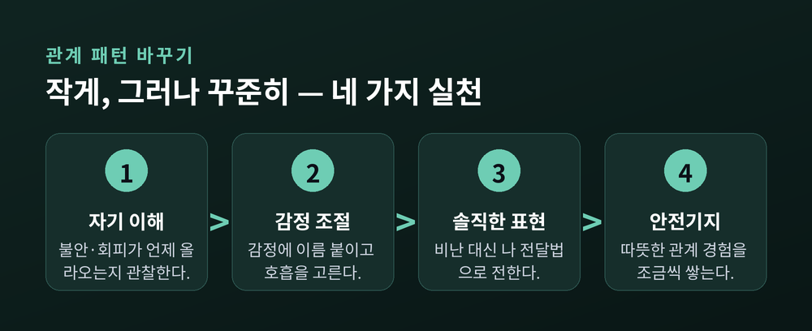

성인 애착유형, 관계 패턴은 어디서 오고 어떻게 바꿀 수 있나

이번 글에서는 '성인 애착유형'을 정리해 보겠습니다. 왜 어떤 사람은 관계에서 자꾸 매달리고, 어떤 사람은 가까워지면 도망치는지. 그 반복되는 패턴이 어디서 왔고, 바꿀 수 있는지를 차분히 살펴보려 합니다.
먼저 결론부터 말씀드립니다. 관계 패턴은 대개 어린 시절의 애착 경험에서 비롯됩니다. 그리고 그 패턴은 성인이 된 뒤에도 충분히 바뀔 수 있습니다.
애착이론은 어디서 시작되었나
애착이론의 뿌리는 영국의 정신과 의사 존 볼비에게 있습니다. 그는 1950~60년대에, 아기가 양육자 곁에 머물며 보호를 구하는 행동을 하나의 진화적 생존 시스템으로 보았습니다. 배고픔 때문만이 아니라, 안전을 위해 사람에게 매달리도록 우리가 설계되어 있다는 것입니다.
이 생각을 실험으로 증명한 사람이 메리 에인스워스입니다. 그는 '낯선 상황 실험'을 고안했습니다. 양육자가 잠시 방을 떠났다가 돌아올 때, 아기가 어떻게 반응하는지를 관찰하는 방식입니다.
여기서 아기들의 반응이 몇 갈래로 나뉘었습니다. 양육자가 돌아오면 금세 안정을 되찾는 아이가 있었습니다. 반대로 관심 없는 척 냉담한 아이, 매달리면서도 쉽게 진정되지 않는 아이도 있었습니다. 이 관찰에서 안정·회피·불안이라는 초기 애착 유형이 나왔고, 이후 혼란 유형이 더해졌습니다.
핵심은 이것입니다. 양육자가 '안전기지'가 되어줄 때, 아이는 마음 놓고 세상을 탐색합니다.
어른의 관계에도 애착이 작동합니다
1980년대 후반, 신디 하잔과 필립 셰이버는 이 이론을 성인의 연애 관계로 확장했습니다. 어릴 때 양육자와 맺은 애착 방식이, 성인이 되어 연인이나 배우자와 맺는 관계에서도 비슷하게 되풀이된다는 것입니다.
즉 어린 시절의 관계 경험이, 어른이 된 지금 관계의 '기본 설정값'처럼 남아 있는 셈입니다. 이들의 연구는 이후 관계 만족도와 친밀감을 다루는 수많은 후속 연구의 토대가 되었습니다.
성인 애착은 흔히 두 개의 축으로 설명합니다. 하나는 '회피 차원'입니다. 친밀함을 얼마나 불편해하는가입니다. 다른 하나는 '불안 차원'입니다. 버림받을까 얼마나 두려워하는가입니다. 이 두 축의 높낮이 조합으로 네 가지 유형이 나옵니다.

성인 애착 네 유형
안정형은 자신을 사랑받을 만한 존재로 여기고, 타인의 관심도 자연스럽게 받아들입니다. 독립성과 의존성의 균형이 좋습니다. 갈등이 생겨도 대화로 풀 수 있다고 믿습니다.
불안-몰두형은 불안 차원이 높습니다. 사랑받고 있는지를 자주 확인하고 싶어 합니다. 상대의 사소한 반응에 크게 흔들리고, 무관심이나 거절 앞에서 특히 힘들어합니다.
회피-거부형은 회피 차원이 높습니다. 가까워질수록 혼자만의 공간이 필요해집니다. 독립과 자립을 중시하고, 감정을 드러내거나 누군가에게 기대는 일을 불편해합니다.
두려움-회피형은 불안과 회피가 둘 다 높은 혼합형입니다. 가까워지고 싶으면서도, 상처받을까 두려워 물러섭니다. "멀어지면 불안하고, 가까워지면 도망치고 싶은" 마음이 반복됩니다.
이 네 유형은 좋고 나쁨의 등급이 아닙니다. 각각은 저마다의 방식으로 상처로부터 자신을 지키려 애써온 흔적에 가깝습니다. 불안형의 확인 욕구도, 회피형의 거리 두기도, 한때는 관계에서 살아남기 위한 나름의 지혜였습니다.
한 가지 당부드립니다. 이 유형들은 사람을 가두는 상자가 아닙니다. 상황과 상대에 따라 결이 달라지고, 정도의 스펙트럼으로 이해하는 편이 정확합니다. 검사 결과 하나로 자신을 규정하기보다, 내 마음을 이해하는 실마리로 삼으시길 권합니다.

패턴은 어디서 오는가 — 내적작동모델
그렇다면 이 차이는 어디서 생길까요. 볼비는 '내적작동모델'이라는 개념으로 설명했습니다.
내적작동모델이란, 어린 시절 양육자와의 상호작용을 통해 마음속에 새겨진 자기와 타인에 대한 그림입니다. 두 가지 질문에 대한 답이라 보시면 됩니다. "나는 사랑받을 만한 사람인가." 그리고 "타인은 내 필요에 반응해 주고 믿을 만한가."
이 그림이 긍정적으로 자리 잡으면 안정형에 가까워집니다. 자기에 대한 그림이 부정적이면 상대에게 매달리기 쉽고, 타인에 대한 그림이 부정적이면 거리를 두기 쉽습니다. 킴 바솔로뮤는 이 두 그림의 조합으로 네 유형을 깔끔하게 정리했습니다.
문제는 이 모델이 시간이 갈수록 굳어진다는 점입니다. 한번 '사람은 결국 나를 떠난다'는 틀이 생기면, 우리는 그 틀에 맞는 신호에 더 주의를 기울이고 그렇게 세상을 해석합니다. 예전엔 그저 살아남기 위한 방식이었던 것이, 지금은 관계를 어렵게 만드는 습관으로 남습니다.
바꿀 수 있습니다 — 획득된 안정애착
다행히 애착 유형은 콘크리트가 아닙니다. 어른이 된 뒤에도 바뀔 수 있습니다. 심리학은 이를 '획득된 안정애착'이라 부릅니다. 어린 시절 불안정했던 사람이, 살아가며 안정 애착으로 옮겨간 상태를 말합니다.
물론 모두가 저절로 바뀌지는 않습니다. 한 연구에 따르면 성장 과정에서 애착 유형이 변화하는 사람은 약 30% 정도로 보고됩니다. 적지 않은 숫자입니다. 변화가 예외가 아니라는 뜻이기도 합니다.
변화는 주로 '좋은 관계 경험'을 통해 일어납니다. 주양육자에게 받지 못했더라도 괜찮습니다. 살면서 만나는 지지적인 사람 — 친구, 연인, 배우자, 동료, 상담사 — 가 새로운 안전기지가 되어줄 수 있습니다. 그런 경험이 반복되면, 우리 마음은 조금씩 '사람을 믿어도 된다'는 신호를 다시 학습합니다.

관계 패턴을 바꾸는 방향
거창한 결심보다, 작은 습관이 힘이 됩니다. 상담과 심리학이 권하는 방향을 정리해 봅니다.
첫째, 자기 이해입니다. 나의 불안이나 회피가 주로 어떤 상황에서 올라오는지 관찰합니다. 몸의 신호와 감정을 함께 살핍니다.
둘째, 감정 조절입니다. 올라온 감정에 이름을 붙이고, 호흡을 고르고, 감정 일기를 적어 보는 것만으로도 마음의 거리가 생깁니다.
셋째, 솔직한 표현입니다. 상대를 비난하는 대신, "나는 이럴 때 불안해져"처럼 내 상태를 담담히 전합니다.
넷째, 안전기지 쌓기입니다. 일관되고 따뜻한 관계 속에서 '믿어도 괜찮다'는 경험을 조금씩 늘려갑니다.
무엇보다 서두르지 마시길 권합니다. 오래 굳은 패턴은 단번에 풀리지 않습니다. 작은 변화를 꾸준히 쌓는 편이 결국 멀리 갑니다.

끝으로 한 마디만 더 드리겠습니다.
애착 유형을 아는 일의 목적은 자신에게 꼬리표를 붙이려는 것이 아닙니다. "나는 원래 이런 사람"이라며 체념하기 위함은 더욱 아닙니다. 오히려 반대입니다. 내 관계 습관이 어디서 왔는지 알게 되면, 비로소 다르게 선택할 여지가 생깁니다.
관계의 패턴은 과거가 만들었지만, 그 패턴을 다시 쓰는 사람은 지금의 나입니다.
혹시 관계의 어려움이 오래 반복되고 혼자 다루기가 벅차다면, 전문 상담을 받아보시길 권합니다. 심리상담이나 부부상담은 안전기지가 되어, 새로운 관계 경험을 연습하도록 도와줍니다. 도움을 청하는 일은 약함이 아니라, 나를 돌보는 가장 단단한 방법입니다.